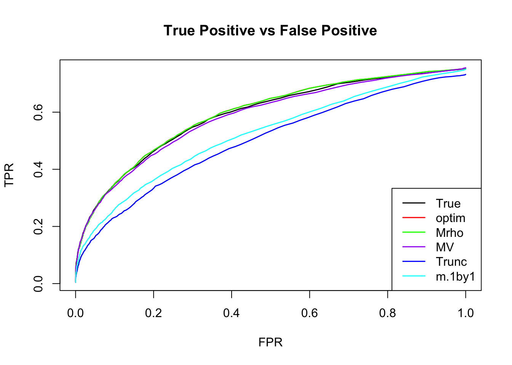

Estimate cor—max MASH
Yuxin Zou
2018-07-25
Last updated: 2018-08-16
library(mashr)Loading required package: ashrsource('../code/generateDataV.R')
source('../code/estimate_cor.R')
source('../code/summary.R')
library(knitr)
library(kableExtra)Apply the max methods for correlation matrix on mash data.
After we estimate each pairwise correlation, the final resulting \(p\times p\) correlation matrix may not be positive definite. I estimate the nearest PD cor matrix with nearPD function.
The estimated V from MLE(optim function) and \(EM_\rho\) perform better than the truncated correlation (error, mash log likelihood, ROC).
Comparing the estimated V from MLE and EM, \(EM_\rho\) algorithm tends to compute faster, and the estimated correlation is slightly better than the one from MLE in terms of estimation error, mash log likelihood, ROC.
One example: p = 3
\[ \hat{\beta}|\beta \sim N_{3}(\hat{\beta}; \beta, \left(\begin{matrix} 1 & 0.7 & 0.2 \\ 0.7 & 1 & 0.4 \\ 0.2 & 0.4 & 1 \end{matrix}\right)) \]
\[ \beta \sim \frac{1}{4}\delta_{0} + \frac{1}{4}N_{3}(0, \left(\begin{matrix} 1 & 0 &0\\ 0 & 0 & 0 \\ 0 & 0 & 0 \end{matrix}\right)) + \frac{1}{4}N_{3}(0, \left(\begin{matrix} 1 & 0 & 0 \\ 0 & 1 & 0 \\ 0 & 0 & 0 \end{matrix}\right)) + \frac{1}{4}N_{3}(0, \left(\begin{matrix} 1 & 1 & 1 \\ 1 & 1 & 1 \\ 1 & 1 & 1 \end{matrix}\right)) \]
set.seed(1)
Sigma = cbind(c(1,0.7,0.2), c(0.7,1,0.4), c(0.2,0.4,1))
U0 = matrix(0,3,3)
U1 = matrix(0,3,3); U1[1,1] = 1
U2 = diag(3); U2[3,3] = 0
U3 = matrix(1,3,3)
data = generate_data(n=4000, p=3, V=Sigma, Utrue = list(U0=U0, U1=U1,U2=U2,U3=U3))We find the estimate of V with canonical covariances and the PCA covariances.
m.data = mash_set_data(data$Bhat, data$Shat)
m.1by1 = mash_1by1(m.data)
strong = get_significant_results(m.1by1)
U.pca = cov_pca(m.data, 3, subset = strong)
U.ed = cov_ed(m.data, U.pca, subset = strong)
U.c = cov_canonical(m.data)The PCA correlation matrices are:
- We run the algorithm in estimate cor mle with 3 different initial points for \(\rho\), (-0.5,0,0.5). The \(\rho\) in each iteration is estimated using
optimfunction. The estimated correlation is
Vhat.mle = estimateV(m.data, c(U.c, U.ed), init_rho = c(-0.5,0,0.5), tol=1e-4, optmethod = 'mle')
Vhat.mle$V [,1] [,2] [,3]
[1,] 1.0000000 0.7009268 0.1588733
[2,] 0.7009268 1.0000000 0.4001842
[3,] 0.1588733 0.4001842 1.0000000- The result uses algorithm in estimate cor em. \(\rho\) in each iteration is the root of a third degree polynomial.
Vhat.em = estimateV(m.data, c(U.c, U.ed), init_rho = c(-0.5,0,0.5), tol = 1e-4, optmethod = 'em2')
Vhat.em$V [,1] [,2] [,3]
[1,] 1.0000000 0.7086927 0.1706391
[2,] 0.7086927 1.0000000 0.4187296
[3,] 0.1706391 0.4187296 1.0000000The running time (in sec.) for each pairwise correlation is
table = data.frame(rbind(Vhat.mle$ttime, Vhat.em$ttime), row.names = c('mle', 'em'))
colnames(table) = c('12','13','23')
table %>% kable() %>% kable_styling()| 12 | 13 | 23 | |
|---|---|---|---|
| mle | 323.868 | 222.129 | 74.992 |
| em | 185.670 | 71.698 | 56.159 |
The time is the total running time with different initial point.
- The result uses algorithm in estimate cor em V.
Vhat.emV = estimateV(m.data, c(U.c, U.ed), init_V = list(diag(ncol(m.data$Bhat)), clusterGeneration::rcorrmatrix(3), clusterGeneration::rcorrmatrix(3)), tol = 1e-4, optmethod = 'emV')
Vhat.emV$V [,1] [,2] [,3]
[1,] 1.0000000 0.5487183 0.2669639
[2,] 0.5487183 1.0000000 0.4654711
[3,] 0.2669639 0.4654711 1.0000000- Using the original truncated correlation:
Vhat.tru = estimate_null_correlation(m.data)
Vhat.tru [,1] [,2] [,3]
[1,] 1.0000000 0.4296283 0.1222433
[2,] 0.4296283 1.0000000 0.3324459
[3,] 0.1222433 0.3324459 1.0000000The truncated correlation underestimates the correlations.
- mash 1by1: Run ash for each condition, and estimate correlation matrix based on the non-significant samples.
V.mash = cor((data$Bhat/data$Shat)[-strong,])
V.mash [,1] [,2] [,3]
[1,] 1.0000000 0.5313446 0.2445663
[2,] 0.5313446 1.0000000 0.4490049
[3,] 0.2445663 0.4490049 1.0000000All the estimated correlation matrices above are positive definite.
Error
Check the estimation error:
FError = c(norm(Vhat.mle$V - Sigma, 'F'),
norm(Vhat.em$V - Sigma, 'F'),
norm(Vhat.emV$V - Sigma, 'F'),
norm(Vhat.tru - Sigma, 'F'),
norm(V.mash - Sigma, 'F'))
OpError = c(norm(Vhat.mle$V - Sigma, '2'),
norm(Vhat.em$V - Sigma, '2'),
norm(Vhat.emV$V - Sigma, '2'),
norm(Vhat.tru - Sigma, '2'),
norm(V.mash - Sigma, '2'))
table = data.frame(FrobeniusError = FError, SpectralError = OpError, row.names = c('mle','em','emV','trunc','m.1by1'))
table %>% kable() %>% kable_styling()| FrobeniusError | SpectralError | |
|---|---|---|
| mle | 0.0581773 | 0.0411417 |
| em | 0.0507627 | 0.0391489 |
| emV | 0.2516219 | 0.1960202 |
| trunc | 0.4091712 | 0.3049974 |
| m.1by1 | 0.2562509 | 0.1915171 |
mash log likelihood
In mash model, the model with correlation from mle has larger loglikelihood.
m.data.mle = mash_set_data(data$Bhat, data$Shat, V=Vhat.mle$V)
m.model.mle = mash(m.data.mle, c(U.c,U.ed), verbose = FALSE)m.data.em = mash_set_data(data$Bhat, data$Shat, V=Vhat.em$V)
m.model.em = mash(m.data.em, c(U.c,U.ed), verbose = FALSE)m.data.emV = mash_set_data(data$Bhat, data$Shat, V=Vhat.emV$V)
m.model.emV = mash(m.data.emV, c(U.c,U.ed), verbose = FALSE)m.data.trunc = mash_set_data(data$Bhat, data$Shat, V=Vhat.tru)
m.model.trunc = mash(m.data.trunc, c(U.c,U.ed), verbose = FALSE)m.data.1by1 = mash_set_data(data$Bhat, data$Shat, V=V.mash)
m.model.1by1 = mash(m.data.1by1, c(U.c,U.ed), verbose = FALSE)m.data.correct = mash_set_data(data$Bhat, data$Shat, V=Sigma)
m.model.correct = mash(m.data.correct, c(U.c,U.ed), verbose = FALSE)The results are summarized in table:
null.ind = which(apply(data$B,1,sum) == 0)
V.trun = c(get_loglik(m.model.trunc), length(get_significant_results(m.model.trunc)), sum(get_significant_results(m.model.trunc) %in% null.ind))
V.mle = c(get_loglik(m.model.mle), length(get_significant_results(m.model.mle)), sum(get_significant_results(m.model.mle) %in% null.ind))
V.em = c(get_loglik(m.model.em), length(get_significant_results(m.model.em)), sum(get_significant_results(m.model.em) %in% null.ind))
V.emV = c(get_loglik(m.model.emV), length(get_significant_results(m.model.emV)), sum(get_significant_results(m.model.emV) %in% null.ind))
V.1by1 = c(get_loglik(m.model.1by1), length(get_significant_results(m.model.1by1)), sum(get_significant_results(m.model.1by1) %in% null.ind))
V.correct = c(get_loglik(m.model.correct), length(get_significant_results(m.model.correct)), sum(get_significant_results(m.model.correct) %in% null.ind))
temp = cbind(V.mle, V.em, V.emV, V.trun, V.1by1, V.correct)
colnames(temp) = c('MLE','EM','EMV', 'Truncate', 'm.1by1', 'True')
row.names(temp) = c('log likelihood', '# significance', '# False positive')
temp %>% kable() %>% kable_styling()| MLE | EM | EMV | Truncate | m.1by1 | True | |
|---|---|---|---|---|---|---|
| log likelihood | -17917.69 | -17919.23 | -17945.16 | -17951.46 | -17943.49 | -17913.58 |
| # significance | 146.00 | 149.00 | 82.00 | 85.00 | 73.00 | 149.00 |
| # False positive | 1.00 | 1.00 | 0.00 | 1.00 | 0.00 | 1.00 |
The estimated pi is
par(mfrow=c(2,3))
barplot(get_estimated_pi(m.model.mle), las=2, cex.names = 0.7, main='MLE', ylim=c(0,0.8))
barplot(get_estimated_pi(m.model.em), las=2, cex.names = 0.7, main='EM', ylim=c(0,0.8))
barplot(get_estimated_pi(m.model.emV), las=2, cex.names = 0.7, main='EMV', ylim=c(0,0.8))
barplot(get_estimated_pi(m.model.trunc), las=2, cex.names = 0.7, main='Truncate', ylim=c(0,0.8))
barplot(get_estimated_pi(m.model.1by1), las=2, cex.names = 0.7, main='m.1by1', ylim=c(0,0.8))
barplot(get_estimated_pi(m.model.correct), las=2, cex.names = 0.7, main='True', ylim=c(0,0.8))
ROC
m.mle.seq = ROC.table(data$B, m.model.mle)
m.em.seq = ROC.table(data$B, m.model.em)
m.emV.seq = ROC.table(data$B, m.model.emV)
m.trun.seq = ROC.table(data$B, m.model.trunc)
m.1by1.seq = ROC.table(data$B, m.model.1by1)
m.correct.seq = ROC.table(data$B, m.model.correct)
RRMSE
rrmse = rbind(RRMSE(data$B, data$Bhat, list(m.model.mle, m.model.em, m.model.emV, m.model.trunc, m.model.1by1, m.model.correct)))
colnames(rrmse) = c('MLE','EM','EMV', 'Truncate','m.1by1','True')
row.names(rrmse) = 'RRMSE'
rrmse %>% kable() %>% kable_styling()| MLE | EM | EMV | Truncate | m.1by1 | True | |
|---|---|---|---|---|---|---|
| RRMSE | 0.5277488 | 0.5285126 | 0.5437355 | 0.5592648 | 0.5442074 | 0.5283068 |
barplot(rrmse, ylim=c(0,(1+max(rrmse))/2), names.arg = c('MLE','EM', 'EMV','Truncate','m.1by1','True'), las=2, cex.names = 0.7, main='RRMSE')More simulations: p = 5
I randomly generate 10 positive definite correlation matrices, V. The sample size is 4000.
\[ \hat{z}|z \sim N_{5}(z, V) \] \[ z\sim\frac{1}{4}\delta_{0} + \frac{1}{4}N_{5}(0,\left(\begin{matrix} 1 & \mathbf{0}_{1\times 4} \\ \mathbf{0}_{4\times 1} & \mathbf{0}_{4\times 4} \end{matrix}\right)) + \frac{1}{4}N_{5}(0,\left(\begin{matrix} \mathbf{1}_{2\times 2} & \mathbf{0}_{1\times 3} \\ \mathbf{0}_{3\times 1} & \mathbf{0}_{3\times 3} \end{matrix}\right)) + \frac{1}{4}N_{5}(0,\mathbf{1}_{5\times 5}) \]
set.seed(100)
n=4000; p = 5
U0 = matrix(0,p,p)
U1 = U0; U1[1,1] = 1
U2 = U0; U2[c(1:2), c(1:2)] = 1
U3 = matrix(1, p,p)
Utrue = list(U0 = U0, U1 = U1, U2 = U2, U3 = U3)
for(t in 1:10){
Vtrue = clusterGeneration::rcorrmatrix(p)
data = generate_data(n, p, Vtrue, Utrue)
# mash cov
m.data = mash_set_data(Bhat = data$Bhat, Shat = data$Shat)
m.1by1 = mash_1by1(m.data)
strong = get_significant_results(m.1by1)
U.pca = cov_pca(m.data, 3, subset = strong)
U.ed = cov_ed(m.data, U.pca, subset = strong)
U.c = cov_canonical(m.data)
Vhat.mle <- estimateV(m.data, c(U.c, U.ed), init_rho = c(-0.5,0,0.5), tol=1e-4, optmethod = 'mle')
Vhat.em <- estimateV(m.data, c(U.c, U.ed), init_rho = c(-0.5,0,0.5), tol=1e-4, optmethod = 'em2')
Vhat.emV <- estimateV(m.data, c(U.c, U.ed), init_V = list(diag(ncol(m.data$Bhat)), clusterGeneration::rcorrmatrix(p), clusterGeneration::rcorrmatrix(p)),tol=1e-4, optmethod = 'emV')
saveRDS(list(V.true = Vtrue, V.mle = Vhat.mle, V.em = Vhat.em, V.emV = Vhat.emV, data = data, strong=strong),
paste0('../output/MASH.result.',t,'.rds'))
}files = dir("../output/AddEMV/"); files = files[grep("MASH.result",files)]
times = length(files)
result = vector(mode="list",length = times)
for(i in 1:times) {
result[[i]] = readRDS(paste("../output/AddEMV/", files[[i]], sep=""))
}mle.pd = numeric(times)
em.pd = numeric(times)
for(i in 1:times){
m.data = mash_set_data(result[[i]]$data$Bhat, result[[i]]$data$Shat)
result[[i]]$V.trun = estimate_null_correlation(m.data, apply_lower_bound = FALSE)
m.1by1 = mash_1by1(m.data)
strong = get_significant_results(m.1by1)
result[[i]]$V.1by1 = cor(m.data$Bhat[-strong,])
U.c = cov_canonical(m.data)
U.pca = cov_pca(m.data, 3, subset = strong)
U.ed = cov_ed(m.data, U.pca, subset = strong)
m.data.true = mash_set_data(Bhat = m.data$Bhat, Shat = m.data$Shat, V = result[[i]]$V.true)
m.model.true = mash(m.data.true, c(U.c,U.ed), verbose = FALSE)
m.data.trunc = mash_set_data(Bhat = m.data$Bhat, Shat = m.data$Shat, V = result[[i]]$V.trun)
m.model.trunc = mash(m.data.trunc, c(U.c,U.ed), verbose = FALSE)
m.data.1by1 = mash_set_data(Bhat = m.data$Bhat, Shat = m.data$Shat, V = result[[i]]$V.1by1)
m.model.1by1 = mash(m.data.1by1, c(U.c,U.ed), verbose = FALSE)
m.data.emV = mash_set_data(Bhat = m.data$Bhat, Shat = m.data$Shat, V = result[[i]]$V.emV$V)
m.model.emV = mash(m.data.emV, c(U.c,U.ed), verbose = FALSE)
# MLE
m.model.mle = m.model.mle.F = m.model.mle.2 = list()
R <- tryCatch(chol(result[[i]]$V.mle$V),error = function (e) FALSE)
if(is.matrix(R)){
mle.pd[i] = 1
m.data.mle = mash_set_data(Bhat = m.data$Bhat, Shat = m.data$Shat, V = result[[i]]$V.mle$V)
m.model.mle = mash(m.data.mle, c(U.c,U.ed), verbose = FALSE)
}else{
V.mle.near.F = as.matrix(Matrix::nearPD(result[[i]]$V.mle$V, conv.norm.type = 'F', keepDiag = TRUE)$mat)
V.mle.near.2 = as.matrix(Matrix::nearPD(result[[i]]$V.mle$V, conv.norm.type = '2', keepDiag = TRUE)$mat)
result[[i]]$V.mle.F = V.mle.near.F
result[[i]]$V.mle.2 = V.mle.near.2
# mashmodel
m.data.mle.F = mash_set_data(Bhat = m.data$Bhat, Shat = m.data$Shat, V = V.mle.near.F)
m.model.mle.F = mash(m.data.mle.F, c(U.c,U.ed), verbose = FALSE)
m.data.mle.2 = mash_set_data(Bhat = m.data$Bhat, Shat = m.data$Shat, V = V.mle.near.2)
m.model.mle.2 = mash(m.data.mle.2, c(U.c,U.ed), verbose = FALSE)
}
# EM
m.model.em = m.model.em.F = m.model.em.2 = list()
R <- tryCatch(chol(result[[i]]$V.em$V),error = function (e) FALSE)
if(is.matrix(R)){
em.pd[i] = 1
m.data.em = mash_set_data(Bhat = m.data$Bhat, Shat = m.data$Shat, V = result[[i]]$V.em$V)
m.model.em = mash(m.data.em, c(U.c,U.ed), verbose = FALSE)
}else{
V.em.near.F = as.matrix(Matrix::nearPD(result[[i]]$V.em$V, conv.norm.type = 'F', keepDiag = TRUE)$mat)
V.em.near.2 = as.matrix(Matrix::nearPD(result[[i]]$V.em$V, conv.norm.type = '2', keepDiag = TRUE)$mat)
result[[i]]$V.em.F = V.em.near.F
result[[i]]$V.em.2 = V.em.near.2
# mashmodel
m.data.em.F = mash_set_data(Bhat = m.data$Bhat, Shat = m.data$Shat, V = V.em.near.F)
m.model.em.F = mash(m.data.em.F, c(U.c,U.ed), verbose = FALSE)
m.data.em.2 = mash_set_data(Bhat = m.data$Bhat, Shat = m.data$Shat, V = V.em.near.2)
m.model.em.2 = mash(m.data.em.2, c(U.c,U.ed), verbose = FALSE)
}
result[[i]]$m.model = list(m.model.true = m.model.true, m.model.trunc = m.model.trunc,
m.model.1by1 = m.model.1by1, m.model.emV = m.model.emV,
m.model.mle = m.model.mle,
m.model.mle.F = m.model.mle.F, m.model.mle.2 = m.model.mle.2,
m.model.em = m.model.em,
m.model.em.F = m.model.em.F, m.model.em.2 = m.model.em.2)
}Error
The column with .F, .2 are from the nearest positive definite matrix with respect to Frobenius norm and spectral norm.
The Frobenius norm is
temp = matrix(0,nrow = times, ncol = 7)
for(i in 1:times){
temp[i, ] = error.cor(result[[i]], norm.type='F', mle.pd = mle.pd[i], em.pd = em.pd[i])
}
colnames(temp) = c('Trunc','m.1by1', 'MLE','MLE.F', 'EM', 'EM.F', 'EMV')
temp[temp==0] = NA
temp %>% kable() %>% kable_styling()| Trunc | m.1by1 | MLE | MLE.F | EM | EM.F | EMV |
|---|---|---|---|---|---|---|
| 0.5847549 | 0.9286016 | 0.3185293 | 0.3053278 | 0.0941757 | NA | 1.0198618 |
| 0.6345196 | 0.8140108 | 0.1169154 | NA | 0.0981075 | NA | 0.8913631 |
| 0.7201453 | 0.9531300 | 0.2344733 | NA | 0.1734402 | NA | 1.0216638 |
| 0.8370832 | 1.0534335 | 0.1968091 | NA | 0.2411372 | NA | 1.1115619 |
| 0.8206008 | 0.8466408 | 0.1194142 | NA | 0.1189734 | NA | 0.9176794 |
| 0.8455747 | 1.1393764 | 0.1650726 | 0.1479670 | 0.1653665 | 0.1516188 | 1.2178752 |
| 0.5173056 | 0.8194980 | 0.1211599 | NA | 0.0861518 | NA | 0.8914736 |
| 0.8840057 | 0.9546138 | 0.1642744 | NA | 0.1563607 | NA | 1.0169747 |
| 0.6535878 | 1.0554833 | 0.1240352 | NA | 0.1323659 | NA | 1.1491978 |
| 0.6425639 | 0.9346341 | 0.0794776 | NA | 0.0700813 | NA | 1.0196620 |
The spectral norm is
temp = matrix(0,nrow = times, ncol = 7)
for(i in 1:times){
temp[i, ] = error.cor(result[[i]], norm.type='2', mle.pd = mle.pd[i], em.pd = em.pd[i])
}
colnames(temp) = c('Trunc','m.1by1', 'MLE','MLE.2', 'EM', 'EM.2', 'EMV')
temp[temp==0] = NA
temp %>% kable() %>% kable_styling()| Trunc | m.1by1 | MLE | MLE.2 | EM | EM.2 | EMV |
|---|---|---|---|---|---|---|
| 0.4230698 | 0.7526315 | 0.2258153 | 0.2205340 | 0.0662442 | NA | 0.8335745 |
| 0.5228925 | 0.6281308 | 0.0783098 | NA | 0.0677285 | NA | 0.7069909 |
| 0.5156642 | 0.7945237 | 0.1750836 | NA | 0.1239438 | NA | 0.8577274 |
| 0.6529121 | 0.8335401 | 0.1484773 | NA | 0.1768351 | NA | 0.8944724 |
| 0.6500336 | 0.6377762 | 0.0778356 | NA | 0.0849870 | NA | 0.7052165 |
| 0.5607948 | 0.8613851 | 0.1001500 | 0.0937816 | 0.1085885 | 0.1015186 | 0.9343139 |
| 0.3157614 | 0.6406310 | 0.0795125 | NA | 0.0659174 | NA | 0.6982291 |
| 0.7134025 | 0.7290570 | 0.1090477 | NA | 0.1103719 | NA | 0.7987348 |
| 0.4767534 | 0.8894951 | 0.0964157 | NA | 0.0957622 | NA | 0.9760343 |
| 0.4591215 | 0.7926789 | 0.0568252 | NA | 0.0558999 | NA | 0.8740268 |
Time
The total running time for each matrix is
mle.time = em.time = numeric(times)
for(i in 1:times){
mle.time[i] = sum(result[[i]]$V.mle$ttime)
em.time[i] = sum(result[[i]]$V.em$ttime)
}
temp = cbind(mle.time, em.time)
colnames(temp) = c('MLE', 'EM')
row.names(temp) = 1:10
temp %>% kable() %>% kable_styling()| MLE | EM |
|---|---|
| 3171.983 | 848.351 |
| 2341.424 | 704.601 |
| 1990.764 | 740.046 |
| 3249.162 | 1072.233 |
| 1988.220 | 717.808 |
| 2580.794 | 958.710 |
| 1928.634 | 597.511 |
| 2992.277 | 1114.932 |
| 2339.513 | 708.779 |
| 2727.560 | 772.780 |
mash log likelihood
The NA means the estimated correlation matrix is not positive definite.
temp = matrix(0,nrow = times, ncol = 10)
for(i in 1:times){
temp[i, ] = loglik.cor(result[[i]]$m.model, mle.pd = mle.pd[i], em.pd = em.pd[i])
}
colnames(temp) = c('True', 'Trunc','m.1by1', 'MLE','MLE.F', 'MLE.2', 'EM', 'EM.F', 'EM.2','EMV')
temp[temp == 0] = NA
temp[,-c(6,9)] %>% kable() %>% kable_styling()| True | Trunc | m.1by1 | MLE | MLE.F | EM | EM.F | EMV |
|---|---|---|---|---|---|---|---|
| -26039.92 | -26130.50 | -26112.94 | NA | -26265.49 | -26120.81 | NA | -26136.19 |
| -25669.59 | -26997.92 | -26950.67 | -26028.96 | NA | -25859.86 | NA | -26967.47 |
| -27473.71 | -27547.11 | -27535.67 | -27465.76 | NA | -27463.43 | NA | -27551.75 |
| -28215.48 | -28604.98 | -28646.72 | -28301.41 | NA | -28338.57 | NA | -28669.24 |
| -24988.68 | -25236.18 | -25110.41 | -25056.59 | NA | -25048.86 | NA | -25123.96 |
| -24299.89 | -24978.79 | -24972.25 | NA | -24492.32 | NA | -24478.09 | -25020.38 |
| -27574.71 | -27698.40 | -27662.48 | -27517.65 | NA | -27540.65 | NA | -27684.83 |
| -27941.86 | -28159.65 | -28182.04 | -27979.99 | NA | -27953.02 | NA | -28222.45 |
| -29788.75 | -29824.45 | -29921.87 | -29760.81 | NA | -29759.50 | NA | -29954.96 |
| -28542.34 | -28922.58 | -29163.51 | -28537.96 | NA | -28550.73 | NA | -29221.61 |
ROC
par(mfrow=c(1,2))
for(i in 1:times){
plotROC(result[[i]]$data$B, result[[i]]$m.model, mle.pd = mle.pd[i], em.pd = em.pd[i], title=paste0('Data', i, ' '))
}


RRMSE
par(mfrow=c(1,2))
for(i in 1:times){
rrmse = rbind(RRMSE(result[[i]]$data$B, result[[i]]$data$Bhat, result[[i]]$m.model))
barplot(rrmse, ylim=c(0,(1+max(rrmse))/2), las=2, cex.names = 0.7, main='RRMSE')
}


Session information
sessionInfo()R version 3.5.1 (2018-07-02)
Platform: x86_64-apple-darwin15.6.0 (64-bit)
Running under: macOS High Sierra 10.13.6
Matrix products: default
BLAS: /Library/Frameworks/R.framework/Versions/3.5/Resources/lib/libRblas.0.dylib
LAPACK: /Library/Frameworks/R.framework/Versions/3.5/Resources/lib/libRlapack.dylib
locale:
[1] en_US.UTF-8/en_US.UTF-8/en_US.UTF-8/C/en_US.UTF-8/en_US.UTF-8
attached base packages:
[1] stats graphics grDevices utils datasets methods base
other attached packages:
[1] kableExtra_0.9.0 knitr_1.20 mashr_0.2-11 ashr_2.2-10
loaded via a namespace (and not attached):
[1] Rcpp_0.12.18 highr_0.7
[3] compiler_3.5.1 pillar_1.3.0
[5] plyr_1.8.4 iterators_1.0.10
[7] tools_3.5.1 corrplot_0.84
[9] digest_0.6.15 viridisLite_0.3.0
[11] evaluate_0.11 tibble_1.4.2
[13] lattice_0.20-35 pkgconfig_2.0.1
[15] rlang_0.2.1 Matrix_1.2-14
[17] foreach_1.4.4 rstudioapi_0.7
[19] yaml_2.2.0 parallel_3.5.1
[21] mvtnorm_1.0-8 xml2_1.2.0
[23] httr_1.3.1 stringr_1.3.1
[25] REBayes_1.3 hms_0.4.2
[27] rprojroot_1.3-2 grid_3.5.1
[29] R6_2.2.2 rmarkdown_1.10
[31] rmeta_3.0 readr_1.1.1
[33] magrittr_1.5 scales_0.5.0
[35] backports_1.1.2 codetools_0.2-15
[37] htmltools_0.3.6 MASS_7.3-50
[39] rvest_0.3.2 assertthat_0.2.0
[41] colorspace_1.3-2 stringi_1.2.4
[43] Rmosek_8.0.69 munsell_0.5.0
[45] pscl_1.5.2 doParallel_1.0.11
[47] truncnorm_1.0-8 SQUAREM_2017.10-1
[49] clusterGeneration_1.3.4 ExtremeDeconvolution_1.3
[51] crayon_1.3.4 This R Markdown site was created with workflowr